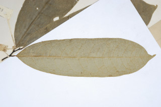
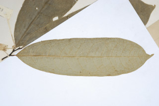

| Habit : | Shrubs or small trees , 3-5 m tall. |
| Leaves : | Leaves simple , alternate , distichous ; petiole 1.0-1.3 cm long, canaliculate ; lamina 10-24 (-35) x 3-6 cm; oblong to oblong-lanceolate , apex abruptly acuminate , base attenuate , secondary_nerves 13-16 pairs, strong, looped at margin, impressed above; tertiary_nerves coarsely reticulate . |
| Inflorescence / Flower : | Flowers solitary , axillary or from small tubercles on old wood , yellowish green, ca. 1.5 cm long; pedicels ca.5 mm long. |
| Fruit and Seed : | Clustered 1-seeded berries , elliptic to oblong , apiculate , 1.2-1.5 cm long, shortly stalked . |
 
